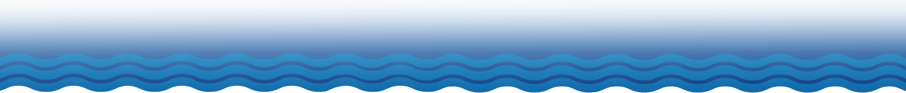
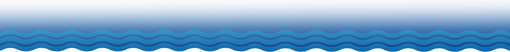

Whitewater Rafting Tours
Experience the thrill of White-Water Rafting.
1-888-224-6105
info@waveexpeditions.com
 


Looking for an unforgettable adventure in Costa Rica? WAVE Rafting offers the best white water rafting Costa Rica adventure! Our expert guides will take you down the Balsa River or Sarapiqui River, both of which offer a thrilling and unforgettable experience near the Arenal Volcano. As you navigate the rapids and take in the lush rainforest surroundings, you’ll be creating memories that will last a lifetime with your friends and family. With our focus on safety, sustainability, and personalized service, WAVE Rafting is the perfect choice for anyone looking to experience the thrill of white water rafting in Costa Rica.
Nestled in the stunning landscapes of rainforest, Arenal offers some of the most exhilarating whitewater rafting experiences in Costa Rica. Whether you’re a seasoned rafter or a first-time adventurer, our top-rated rafting tours are guaranteed to make your heart race and create memories that last a lifetime. With a range of tours suitable for all skill levels, you can choose the experience that matches your desired level of excitement. From mild rapids perfect for families with kids to more challenging stretches for adrenaline junkies, we have the perfect rafting tour to suit your preferences. Check out our Top Rafting Tours in Arenal and book your own adventure!

Experience the thrill of White-Water Rafting.

A full adrenaline White Water and Canyoning combo sure to kick start your vacation.

Enjoy the sights and sounds of Costa Rica Wildlife on a peaceful trip.

Revive your memories. Beautiful high quality pictures taken during your adventure by our professional photographers.

A person harnesses the power of the wind with a controllable power kite to be propelled across the water on a board.

This Family friendly white water rafting adventure is a great option for all levels of rafting. These tours requires a minimum of 4 people.

Rafting with Costa Rica’s Favorite Outfitter
Choose WAVE Rafting! With our unparalleled safety record and experienced guides, you can
enjoy the thrills of the Balsa River or Sarapiqui River with complete peace of mind. Our
trained staff is dedicated to ensuring you have an action-packed, fun-filled experience
you’ll always remember. Don’t miss out on the ultimate rafting Costa Rica adventure.
See you on the river!

Costa Rica is a country that is synonymous with adventure and outdoor activities, and white water rafting is no exception. With its many rivers and rapids, Costa Rica ...

Costa Rica is known for its thrilling whitewater rafting adventures, but not all tours are suitable for families with young children. That’s where Wave Rafting’s Class II-III Balsa River...

Rafting & tubing with Wave Expeditions is a fun & adventure packed day in La Fortuna. Enjoy the Class II & III rapids on the Balsa River, buffet lunch, & educational demonstrations ...